GMT Modules
Complete reference documentation for all GMT plotting and processing modules.
Core Programs  Core GMT programs
Core GMT programs
Supplements  Supplemental GMT programs
Supplemental GMT programs
GMT.jl Extensions  Additional plotting functions and data access utilities that extend GMT’s core capabilities
Additional plotting functions and data access utilities that extend GMT’s core capabilities
Plotting  Plotting (GMT) programs
Plotting (GMT) programs
Grid operations  Work with gridded datasets
Work with gridded datasets
Data Processing  Filter, transform, and analyze data
Filter, transform, and analyze data
Core Programs
basemap  Plot base maps and frames
Plot base maps and frames
blockmean  Block average (x,y,z) data tables by mean estimation
Block average (x,y,z) data tables by mean estimation
blockmedian  Block average (x,y,z) data tables by median estimation
Block average (x,y,z) data tables by median estimation
blockmode  Block average (x,y,z) data tables by mode estimation
Block average (x,y,z) data tables by mode estimation
clip  Initialize or terminate polygonal clip paths
Initialize or terminate polygonal clip paths
coast  Plot continents, countries, shorelines, rivers, and borders
Plot continents, countries, shorelines, rivers, and borders
colorbar  Plot gray scale or color scale bar
Plot gray scale or color scale bar
contour  Contour table data by triangulation
Contour table data by triangulation
dimfilter  Directional filtering of grids in the space domain
Directional filtering of grids in the space domain
events  Plot event symbols, lines, polygons and labels for one moment in time
Plot event symbols, lines, polygons and labels for one moment in time
filter1d  Time domain filtering of 1-D data tables
Time domain filtering of 1-D data tables
fitcircle  Find mean position and best-fit great or small circle
Find mean position and best-fit great or small circle
gmt2kml  Convert tables to KML files for Google Earth
Convert tables to KML files for Google Earth
gmtbinstats  Bin spatial data and compute various statistics
Bin spatial data and compute various statistics
gmtconnect  Connect individual lines whose end points match
Connect individual lines whose end points match
gmtconvert  Convert, paste, or extract columns from tables
Convert, paste, or extract columns from tables
gmtdefaults  List current GMT default settings
List current GMT default settings
gmtinfo  Get information about data tables
Get information about data tables
gmtlogo  Plot the GMT & Julia logos
Plot the GMT & Julia logos
gmtmath  Reverse Polish Notation calculator for data tables
Reverse Polish Notation calculator for data tables
gmtregress  Linear regression of 1-D data sets
Linear regression of 1-D data sets
gmtselect  Select data table subsets based on multiple spatial criteria
Select data table subsets based on multiple spatial criteria
gmtset  Change individual GMT default parameters
Change individual GMT default parameters
gmtsimplify  Line reduction using the Douglas-Peucker algorithm
Line reduction using the Douglas-Peucker algorithm
gmtspatial  Geospatial operations on points, lines and polygons
Geospatial operations on points, lines and polygons
gmtsplit  Split xyz[dh] data tables into individual segments
Split xyz[dh] data tables into individual segments
gmtwhich  Find full path to specified files
Find full path to specified files
grd2cpt  Make linear or histogram-equalized color palette from grid
Make linear or histogram-equalized color palette from grid
grd2kml  Create KML image quadtree from single grid
Create KML image quadtree from single grid
grd2xyz  Convert grid to data table
Convert grid to data table
grdclip  Clip the range of grid values
Clip the range of grid values
grdcontour  Make contour map using a grid
Make contour map using a grid
grdcut  Extract subregion from a grid
Extract subregion from a grid
grdedit  Modify header or content of a grid
Modify header or content of a grid
grdfft  Mathematical operations on grids in the spectral domain
Mathematical operations on grids in the spectral domain
grdfill  Fill blank areas in grids
Fill blank areas in grids
grdfilter  Filter a grid in the space or time domain
Filter a grid in the space or time domain
grdgradient  Compute directional gradients from a grid
Compute directional gradients from a grid
grdhisteq  Perform histogram equalization for a grid
Perform histogram equalization for a grid
grdimage  Project and plot grids or images
Project and plot grids or images
grdinfo  Extract information from grids
Extract information from grids
grdlandmask  Create “wet-dry” mask grid from shoreline data base
Create “wet-dry” mask grid from shoreline data base
grdmask  Create mask grid from polygons or point coverage
Create mask grid from polygons or point coverage
grdmath  Reverse Polish Notation calculator for grids
Reverse Polish Notation calculator for grids
grdpaste  Join two grids along their common edge
Join two grids along their common edge
grdproject  Forward and inverse map transformation of grids
Forward and inverse map transformation of grids
grdsample  Resample a grid onto a new lattice
Resample a grid onto a new lattice
grdtrack  Sample grids at specified (x,y) locations
Sample grids at specified (x,y) locations
grdtrend  Fit trend surface to grids and compute residuals
Fit trend surface to grids and compute residuals
grdvector  Plot vector field from two component grids
Plot vector field from two component grids
grdview  Create 3-D perspective image or surface mesh from a grid
Create 3-D perspective image or surface mesh from a grid
grdvolume  Calculate grid volume and area constrained by a contour
Calculate grid volume and area constrained by a contour
greenspline  Interpolate using Green’s functions for splines
Interpolate using Green’s functions for splines
histogram  Plot a histogram
Plot a histogram
image  Plot raster or EPS images
Plot raster or EPS images
inset  Manage figure inset setup and completion
Manage figure inset setup and completion
kml2gmt  Extract GMT table data from Google Earth KML files
Extract GMT table data from Google Earth KML files
legend  Plot a legend
Plot a legend
makecpt  Make GMT color palette tables
Make GMT color palette tables
mapproject  Forward and inverse map transformations of 2-D coordinates
Forward and inverse map transformations of 2-D coordinates
mask  Clip or mask map areas with no data coverage
Clip or mask map areas with no data coverage
movie  Create animation sequences and movies
Create animation sequences and movies
nearneighbor  Grid table data using a “Nearest neighbor” algorithm
Grid table data using a “Nearest neighbor” algorithm
plot  Plot lines, polygons, and symbols
Plot lines, polygons, and symbols
plot3d  Plot lines, polygons, and symbols in 3-D
Plot lines, polygons, and symbols in 3-D
project  Project data onto lines or great circles
Project data onto lines or great circles
rose  Plot a polar histogram (rose diagram)
Plot a polar histogram (rose diagram)
sample1d  Resample 1-D table data using splines
Resample 1-D table data using splines
solar  Plot day-light terminators and other sunlight parameters
Plot day-light terminators and other sunlight parameters
spectrum1d  Compute auto- and cross-spectra from one or two time series
Compute auto- and cross-spectra from one or two time series
sph2grd  Compute grid from spherical harmonic coefficients
Compute grid from spherical harmonic coefficients
sphdistance  Create Voronoi distance, node, or natural nearest-neighbor grid on a sphere
Create Voronoi distance, node, or natural nearest-neighbor grid on a sphere
sphinterpolate  Spherical gridding in tension of data on a sphere
Spherical gridding in tension of data on a sphere
sphtriangulate  Delaunay or Voronoi construction of spherical data
Delaunay or Voronoi construction of spherical data
splitxyz  Split xyz[dh] data tables into individual segments
Split xyz[dh] data tables into individual segments
subplot  Manage modern mode figure subplot configuration and selection
Manage modern mode figure subplot configuration and selection
surface  Grid table data using adjustable tension continuous curvature splines
Grid table data using adjustable tension continuous curvature splines
ternary  Plot data on ternary diagrams
Plot data on ternary diagrams
text  Plot or typeset text
Plot or typeset text
trend1d  Fit a polynomial trend to time series
Fit a polynomial trend to time series
trend2d  Fit a polynomial trend to grids
Fit a polynomial trend to grids
triangulate  Delaunay triangulation or Voronoi partitioning and gridding
Delaunay triangulation or Voronoi partitioning and gridding
wiggle  Plot z = f(x,y) anomalies along tracks
Plot z = f(x,y) anomalies along tracks
xyz2grd  Convert data table to a grid
Convert data table to a grid
Supplements
earthtide  Compute grids or time-series of solid Earth tides
Compute grids or time-series of solid Earth tides
img2grd  Extract a subset from an img file in Mercator or Geographic format
Extract a subset from an img file in Mercator or Geographic format
flexure  Compute flexural deformation of 2-D loads, forces, and bending moments
Compute flexural deformation of 2-D loads, forces, and bending moments
segy2grd  Converting SEGY data to a grid
Converting SEGY data to a grid
grdrotater  Finite rotation reconstruction of geographic grid
Finite rotation reconstruction of geographic grid
gpsgridder  Interpolate GPS velocities using Green’s functions for elastic deformation
Interpolate GPS velocities using Green’s functions for elastic deformation
mgd77convert  Convert MGD77 data to other formats
Convert MGD77 data to other formats
gravfft  Spectral calculations of gravity, isostasy, admittance, and coherence for grids
Spectral calculations of gravity, isostasy, admittance, and coherence for grids
segy  Plot a SEGY file in 2-D
Plot a SEGY file in 2-D
grdspotter  Create CVA grid from a gravity or topography grid
Create CVA grid from a gravity or topography grid
velo  Plot velocity vectors, crosses, anisotropy bars and wedges
Plot velocity vectors, crosses, anisotropy bars and wedges
magref  Evaluate the IGRF or CM4 magnetic field models
Evaluate the IGRF or CM4 magnetic field models
mgd77track  Plot track-lines of MGD77 cruises
Plot track-lines of MGD77 cruises
gravmag3d  Compute the gravity/magnetic anomaly of a 3-D body by the method of Okabe
Compute the gravity/magnetic anomaly of a 3-D body by the method of Okabe
segyz  Plot a SEGY file in 3-D
Plot a SEGY file in 3-D
hotspotter  Create CVA grid from seamount locations
Create CVA grid from seamount locations
gravprisms  Compute geopotential anomalies over 3-D vertical prisms
Compute geopotential anomalies over 3-D vertical prisms
coupe  Plot cross-sections of focal mechanisms
Plot cross-sections of focal mechanisms
originater  Associate seamounts with nearest hotspot point sources
Associate seamounts with nearest hotspot point sources
grdflexure  Compute flexural deformation of 3-D surfaces for various rheologies
Compute flexural deformation of 3-D surfaces for various rheologies
meca  Plot focal mechanisms
Plot focal mechanisms
pmodeler  Evaluate a plate motion model at given locations
Evaluate a plate motion model at given locations
grdgravmag3d  Computes the gravity effect of one (or two) grids by the method of Okabe
Computes the gravity effect of one (or two) grids by the method of Okabe
gmtisf  Read seismicity data in the ISF formated file
Read seismicity data in the ISF formated file
polespotter  Find stage poles given fracture zones and abyssal hills
Find stage poles given fracture zones and abyssal hills
grdredpol  Compute the Continuous Reduction To the Pole, AKA differential RTP
Compute the Continuous Reduction To the Pole, AKA differential RTP
polar  Plot polarities on the lower hemisphere of the focal sphere
Plot polarities on the lower hemisphere of the focal sphere
rotconverter  Manipulate total reconstruction and stage rotations
Manipulate total reconstruction and stage rotations
grdseamount  Create synthetic seamounts (Gaussian, parabolic, polynomial, cone or disc; circular or elliptical)
Create synthetic seamounts (Gaussian, parabolic, polynomial, cone or disc; circular or elliptical)
sac  Plot seismograms in SAC format
Plot seismograms in SAC format
rotsmoother  Get mean rotations and covariance matrices from set of finite rotations
Get mean rotations and covariance matrices from set of finite rotations
talwani2d  Compute geopotential anomalies over 2-D bodies by the method of Talwani
Compute geopotential anomalies over 2-D bodies by the method of Talwani
talwani3d  Compute geopotential anomalies over 3-D bodies by the method of Talwani
Compute geopotential anomalies over 3-D bodies by the method of Talwani
backtracker  Generate forward and backward flowlines and hotspot tracks
Generate forward and backward flowlines and hotspot tracks
grdpmodeler  Evaluate a plate motion model on a geographic grid
Evaluate a plate motion model on a geographic grid
windbarbs  Plot wind barb field from two component grids
Plot wind barb field from two component grids
Plotting Programs
Programs for creating maps, plots, charts, and other visualizations.
arrows  Plot arrow fields.
Plot arrow fields.
band  Plot line with symmetrical or asymmetrical band.
Plot line with symmetrical or asymmetrical band.
bar  Plot bar graph.
Plot bar graph.
bar3  Plot 3D bar graph.
Plot 3D bar graph.
basemap  Plot base maps and frames.
Plot base maps and frames.
biplot  Create 2D biplot of PCA analysis.
Create 2D biplot of PCA analysis.
boxplot  Draw box-and-whisker plot.
Draw box-and-whisker plot.
bubblechart  Plot bubbles at (x,y) locations.
Plot bubbles at (x,y) locations.
coast  Plot continents, shorelines, rivers, and borders on maps.
Plot continents, shorelines, rivers, and borders on maps.
colorbar  Plot a gray or color scale-bar on maps.
Plot a gray or color scale-bar on maps.
contour  Contour plot from table data by direct triangulation.
Contour plot from table data by direct triangulation.
contourf  Create filled contour maps.
Create filled contour maps.
cornerplot  Density plots of multi-dimensional data combinations.
Density plots of multi-dimensional data combinations.
earthregions  Extract or plot named geographic regions.
Extract or plot named geographic regions.
ecdfplot  Plot empirical cumulative distribution function.
Plot empirical cumulative distribution function.
feather  Plot arrows originating from x-axis.
Plot arrows originating from x-axis.
fill_between  Fill area between two horizontal curves.
Fill area between two horizontal curves.
grdcontour  Make contour plot or map (using a projection) from a grid.
Make contour plot or map (using a projection) from a grid.
grdimage  Project grids or images and plot them on maps.
Project grids or images and plot them on maps.
grdview  Create 3-D perspective image or surface mesh from a grid.
Create 3-D perspective image or surface mesh from a grid.
hband  Plot horizontal bands (see vband).
Plot horizontal bands (see vband).
histogram  Calculate and plot histograms.
Calculate and plot histograms.
hlines  Plot horizontal reference lines.
Plot horizontal reference lines.
legend  Makes legends that can be overlaid on maps.
Makes legends that can be overlaid on maps.
lines  Plot lines with decoration options.
Plot lines with decoration options.
logo  Plot the GMT logo.
Plot the GMT logo.
marginalhist  Scatter plot with marginal histograms.
Scatter plot with marginal histograms.
parallelplot  Create parallel coordinates plots.
Create parallel coordinates plots.
pastplates  Plot tectonic plate reconstructions.
Plot tectonic plate reconstructions.
pcolor  Create colored cells plot.
Create colored cells plot.
piechart  Create pie charts.
Create pie charts.
plot  Reads (x,y) pairs and plot lines, polygons, or symbols with different levels of decoration.
Reads (x,y) pairs and plot lines, polygons, or symbols with different levels of decoration.
plotlinefit  Plot data with fitted line.
Plot data with fitted line.
qqplot  Compare quantiles of two distributions.
Compare quantiles of two distributions.
quiver  Plot vector fields from component grids.
Plot vector fields from component grids.
radar  Create radar/spider plots.
Create radar/spider plots.
scatter  Plot symbols at (x,y) locations.
Plot symbols at (x,y) locations.
scatter3  Plot symbols at (x,y,z) locations.
Plot symbols at (x,y,z) locations.
seismicity  Plot earthquake data from USGS.
Plot earthquake data from USGS.
stairs  Plot stairstep graphs.
Plot stairstep graphs.
stem  Plot data as stems from baseline.
Plot data as stems from baseline.
stereonet  Plot stereonets for structural geology.
Plot stereonets for structural geology.
streamlines  Compute and plot 2D streamlines.
Compute and plot 2D streamlines.
ternary  Plot data on ternary diagrams.
Plot data on ternary diagrams.
triplot  Plot 2D triangulation or Voronoi polygons.
Plot 2D triangulation or Voronoi polygons.
trisurf  Plot 3D triangular surfaces.
Plot 3D triangular surfaces.
vband  Plot vertical or horizontal bands.
Plot vertical or horizontal bands.
violins  Create violin plots.
Create violin plots.
vlines  Plot vertical reference lines.
Plot vertical reference lines.
Grid Operations
Functions for creating, modifying, and analyzing gridded datasets.
grd2cpt  Make linear or histogram-equalized color palette from grid
Make linear or histogram-equalized color palette from grid
grd2xyz  Convert grid to data table
Convert grid to data table
grdclip  Clip the range of grid values
Clip the range of grid values
grdcut  Extract subregion from a grid
Extract subregion from a grid
grdedit  Modify header or content of a grid
Modify header or content of a grid
grdfft  Mathematical operations on grids in the spectral domain
Mathematical operations on grids in the spectral domain
grdfill  Fill blank areas in grids
Fill blank areas in grids
grdfilter  Filter a grid in the space or time domain
Filter a grid in the space or time domain
grdgradient  Compute directional gradients from a grid
Compute directional gradients from a grid
grdhisteq  Perform histogram equalization for a grid
Perform histogram equalization for a grid
grdinfo  Extract information from grids
Extract information from grids
grdlandmask  Create “wet-dry” mask grid from shoreline data base
Create “wet-dry” mask grid from shoreline data base
grdmask  Create mask grid from polygons or point coverage
Create mask grid from polygons or point coverage
grdmath  Reverse Polish Notation calculator for grids
Reverse Polish Notation calculator for grids
grdpaste  Join two grids along their common edge
Join two grids along their common edge
grdproject  Forward and inverse map transformation of grids
Forward and inverse map transformation of grids
grdsample  Resample a grid onto a new lattice
Resample a grid onto a new lattice
grdtrack  Sample grids at specified (x,y) locations
Sample grids at specified (x,y) locations
grdtrend  Fit trend surface to grids and compute residuals
Fit trend surface to grids and compute residuals
grdvolume  Calculate grid volume and area constrained by a contour
Calculate grid volume and area constrained by a contour
Data Processing
Functions for filtering, transforming, and analyzing data.
blockmean  Block average (x,y,z) data tables by mean estimation
Block average (x,y,z) data tables by mean estimation
blockmedian  Block average (x,y,z) data tables by median estimation
Block average (x,y,z) data tables by median estimation
blockmode  Block average (x,y,z) data tables by mode estimation
Block average (x,y,z) data tables by mode estimation
filter1d  Time domain filtering of 1-D data tables
Time domain filtering of 1-D data tables
fitcircle  Find mean position and best-fit great or small circle
Find mean position and best-fit great or small circle
gmtconnect  Connect individual lines whose end points match
Connect individual lines whose end points match
gmtconvert  Convert, paste, or extract columns from tables
Convert, paste, or extract columns from tables
gmtmath  Reverse Polish Notation calculator for data tables
Reverse Polish Notation calculator for data tables
gmtselect  Select data table subsets based on multiple spatial criteria
Select data table subsets based on multiple spatial criteria
gmtsimplify  Line reduction using the Douglas-Peucker algorithm
Line reduction using the Douglas-Peucker algorithm
gmtspatial  Geospatial operations on points, lines and polygons
Geospatial operations on points, lines and polygons
greenspline  Interpolate using Green’s functions for splines
Interpolate using Green’s functions for splines
makecpt  Make GMT color palette tables
Make GMT color palette tables
nearneighbor  Grid table data using a “Nearest neighbor” algorithm
Grid table data using a “Nearest neighbor” algorithm
spectrum1d  Compute auto- and cross-spectra from one or two time series
Compute auto- and cross-spectra from one or two time series
surface  Grid table data using adjustable tension continuous curvature splines
Grid table data using adjustable tension continuous curvature splines
trend1d  Fit a polynomial trend to time series
Fit a polynomial trend to time series
trend2d  Fit a polynomial trend to grids
Fit a polynomial trend to grids
triangulate  Delaunay triangulation or Voronoi partitioning and gridding
Delaunay triangulation or Voronoi partitioning and gridding
xyz2grd  Convert data table to a grid
Convert data table to a grid
GMT.jl Extensions
High-level plotting functions and data access utilities that extend GMT’s core capabilities with Julia-specific features.
Gantijoin  Anti join operation
Anti join operation
Gcrossjoin  Cross join operation
Cross join operation
Ginnerjoin  Inner join operation
Inner join operation
Gleftjoin  Left join operation
Left join operation
Gouterjoin  Outer join operation
Outer join operation
Grightjoin Right join operation
Gsemijoin  Semi join operation
Semi join operation
ISOtime2unix ISO time to Unix time
append2fig  Append elements to existing figure
Append elements to existing figure
autocov  Autocovariance function
Autocovariance function
blendimg  Blend images with transparency
Blend images with transparency
cart2pol Cartesian to polar coordinates
cart2sph Cartesian to spherical coordinates
circfit  Fit circle to points
Fit circle to points
coastlinesproj 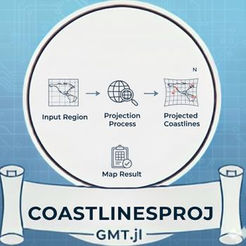 Project coastlines to map
colorzones 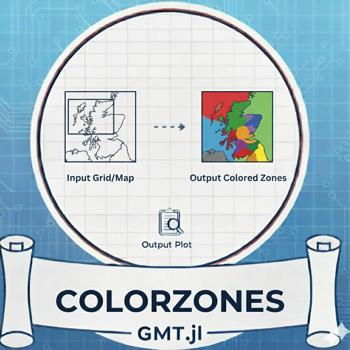 Apply color palettes to segmented data
conv  Convolution
Convolution
cpt4dcw Color palette for DCW
delrows  Delete rows from dataset
Delete rows from dataset
df2ds  DataFrame to GMTdataset
DataFrame to GMTdataset
ds2df  GMTdataset to DataFrame
GMTdataset to DataFrame
earthregions  Plot or extract named geographic regions
Plot or extract named geographic regions
era5time  ERA5 time information
ERA5 time information
fields  Get structure fields
Get structure fields
fileparts  Parse file paths
Parse file paths
flipdim  Flip array dimensions
Flip array dimensions
fliplr  Flip left-right
Flip left-right
flipud  Flip up-down
Flip up-down
geocoder Geocoding utilities
geodetic2enu 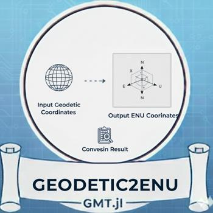 Geodetic to ENU coordinates
getbyattrib Get data by attribute
getprovider Get tile provider info
getregion  Get data region
Get data region
gmtread Read GMT data files
gmtwrite Write GMT data files
graticules 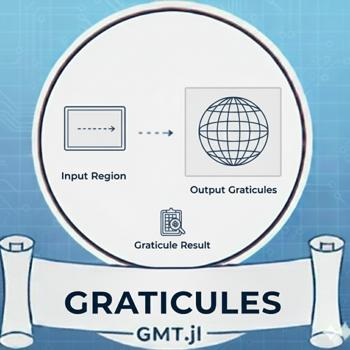 Create map graticules
groupby  Group data by values
Group data by values
gunique Get unique elements with indices
hlines  Plot horizontal reference lines
Plot horizontal reference lines
ind2bool  Indices to boolean
Indices to boolean
info Get data information
inwhichpolygon 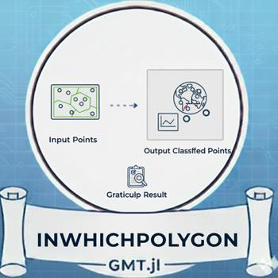 Find containing polygon
isclockwise Check polygon orientation
isnodata Check for no-data values
laswrite Write LAS point cloud
lazinfo LAZ file information
lazread Read LAZ point cloud
lazwrite Write LAZ point cloud
leepacific 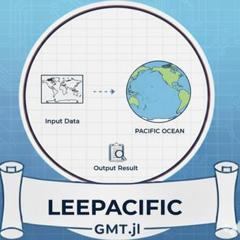 Lee’s Pacific projection utilities
lelandshade 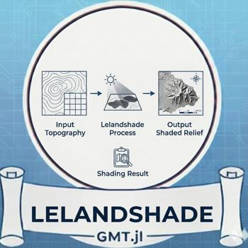 Lee’s landshading utilities
linearfitxy 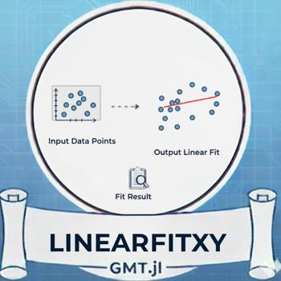 Plot data with fitted line
linspace  Linearly spaced vector.
Linearly spaced vector.
listecmwfvars 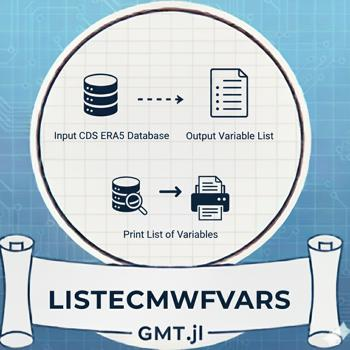 List ECMWF variables.
logo  Plot the GMT & Julia logos.
Plot the GMT & Julia logos.
logspace  Logarithmically spaced vector
Logarithmically spaced vector
lowess  Locally weighted regression smoothing
Locally weighted regression smoothing
mad  Median absolute deviation
Median absolute deviation
magic  Magic square generation
Magic square generation
makeDCWs  Make DCW polygons
Make DCW polygons
mapsize2region 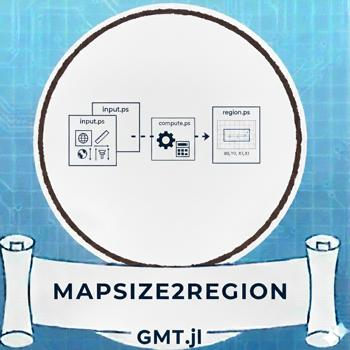 Map size to region
mbgetdata  Get MB-System data
Get MB-System data
mbimport  Import MB-System data
Import MB-System data
mblevitus  Levitus database access
Levitus database access
mbsvplist  Sound velocity profiles
Sound velocity profiles
meshgrid  Create coordinate arrays
Create coordinate arrays
meteostat  Meteostat weather data
Meteostat weather data
mksymbol  Make custom symbols
Make custom symbols
mosaic Create image mosaics from tiles
nanmean  Mean ignoring NaNs
Mean ignoring NaNs
nanstd  Standard deviation ignoring NaNs
Standard deviation ignoring NaNs
orbits  Satellite orbit calculations
Satellite orbit calculations
parkergrav Calculate gravity anomalies
pastplates  Tectonic plate reconstructions
Tectonic plate reconstructions
pcolor  Pseudocolor plot with scaled colors
Pseudocolor plot with scaled colors
peaks  Generate peaks function
Generate peaks function
piechart  Create pie charts
Create pie charts
plotlinefit  Plot data with linear fit
Plot data with linear fit
pol2cart  Polar to Cartesian
Polar to Cartesian
polyfit  Polynomial fitting
Polynomial fitting
polygonlevels 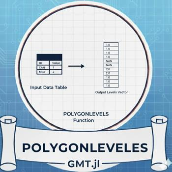 Create polygons from contour levels
polyval  Evaluate polynomial
Evaluate polynomial
pow  Power function
Power function
qqplot  Quantile-quantile plots
Quantile-quantile plots
quadbounds  Quadtree bounds
Quadtree bounds
quadkey  Quadtree key
Quadtree key
quiver  Vector field plots with arrows
Vector field plots with arrows
radar  Create radar/spider plots
Create radar/spider plots
randinpolygon  Random points in polygon
Random points in polygon
rasterzones 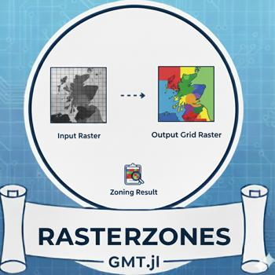 Create rasterized zone maps
regiongeog 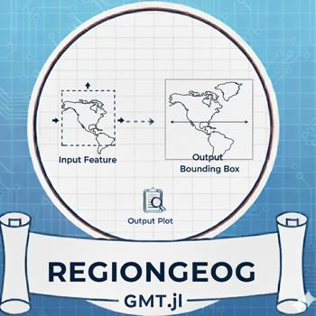 Geographic region utilities
remotegrid Access remote grid datasets
resetGMT  Reset GMT session
Reset GMT session
scatter3  3D scatter plots
3D scatter plots
seismicity  Plot earthquake data
Plot earthquake data
slicecube Slice through cube
sortslicesperm  Sort with permutation
Sort with permutation
spatialjoin  Spatial join operations
Spatial join operations
sph2cart Spherical to Cartesian
squeeze  Remove singleton dimensions
Remove singleton dimensions
stackgrids 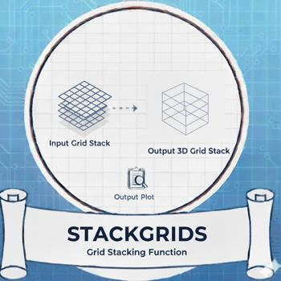 Stack multiple grids
stats  Statistical summary
Statistical summary
stereonet  Stereonets for structural geology
Stereonets for structural geology
streamlines  Compute and plot streamlines
Compute and plot streamlines
tern2cart  Ternary to Cartesian
Ternary to Cartesian
terramar Land/sea utilities
texture_img  Apply texture to image
Apply texture to image
theme  Set plot theme
Set plot theme
tic  Start timer
Start timer
toc  Stop timer
Stop timer
togglemask  Toggle mask values
Toggle mask values
trisurf  Triangulated surface plots
Triangulated surface plots
uniqueind Unique with indices
vband  Plot vertical bands/shaded regions
Plot vertical bands/shaded regions
vector_attrib  Vector attributes
Vector attributes
vizpdf  Visualize PDF
Visualize PDF
vlines  Plot vertical reference lines
Plot vertical reference lines
whereami Location information
whittaker Whittaker-Henderson smoothing
wmsinfo WMS service information
wmsread Fetch Web Map Service data
wmstest  Test WMS service
Test WMS service
worldrectangular World in rectangular projection
worldrectcoast World coastlines rectangular
worldrectgrid World graticules rectangular
xcorr  Cross-correlation
Cross-correlation
xcov  Cross-covariance
Cross-covariance
xyzw2cube  Table to data cube
Table to data cube
yeardecimal Decimal year conversion
zonal_statistics Zonal statistics (alias)
zonal_stats Zonal statistics
zscores  Compute z-scores
Compute z-scores